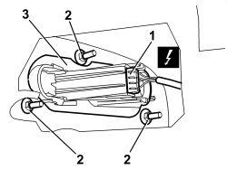
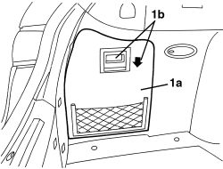
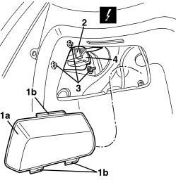

5540A56 EXTERIOR REAR LIGHT (ONE), LEFT OR RIGHT - R.R.
- Path
- Procedures > 55 ELECTRICAL EQUIPMENT > 5540 EXTERIOR LIGHTING > 5540A LIGHTING > 5540A56 EXTERIOR REAR LIGHT (ONE), LEFT OR RIGHT - R.R.
- Kind
- repair procedure (removal / refitting; the operation number is the code)
- Applies to
- all engines; all production periods
- Interactive page
- https://sloeber94.github.io/elrnDB/#/939011023
Applies to: all engines; all production periods
 Removing
Removing
 Refitting
Refitting- Open the boot lid.
1. Undo the nut fixing the inner light cover.
2. Remove the inner light cover (2a) releasing the retainer (2b).

Applies to: all engines; all production periods
1. Disconnect the electrical connection.
Description | Component |
|---|---|
LEFT REAR LIGHT CLUSTER | |
RIGHT REAR LIGHT CLUSTER |
2. Undo the light retaining nuts.
3. Remove the light from the outside.

Applies to: all engines; all production periods
Refitting
Removing- Check that the light is not damaged.
- Position the light in the housing.
- Tighten the nuts.
- Connect the electrical connection.
- Position the inner light cover and attach the retainer.
- Tighten the nut.
- Close the boot lid.
- Check that the outer rear light cluster lights are working.
Applies to: all engines; all production periods; only with equipment: Station Wagon
Removing
Refitting- Open the tailgate.
1. Remove the luggage compartment side door (1a) using the grip (1b).

Applies to: all engines; all production periods; only with equipment: Station Wagon
1. Remove the protective inner light cover (1a) releasing the retainers (1b).
2. Disconnect the electrical connection.
Description | Component |
|---|---|
LEFT REAR LIGHT CLUSTER | |
RIGHT REAR LIGHT CLUSTER |
3. Undo the light retaining nuts.
4. Remove the light from the outside.

Applies to: all engines; all production periods; only with equipment: Station Wagon
Refitting
Removing- Check that the light is not damaged.
- Position the light in the housing.
- Tighten the nuts.
- Connect the electrical connection.
- Place the protective inner light cover in position and attach the retainers.
- Fit the luggage compartment side cover in place.
- Close the tailgate.
- Check that the outer rear light cluster lights are working.
Topics linked from this page (2)
Topics that link to this page (26)
- T025 WIND NOISE FROM THE REAR AREA
- 5010C60 LH OR RH REAR AIR OUTLET VENT (ONE) - R.R
- 5505C41 PASSENGER COMPARTMENT WIRING - R.R
- 5505C82 WIRING BUILT INTO REAR BUMPER R R
- 5580H30 PARKING OBSTACLE DETECTION SYSTEM REAR SENSORS - R.R.
- 7055B24 REAR BUMPER DAMPER - R+R WITH BUMPER REMOVED
- 7055B75 REAR BUMPER CENTRE MOUNT - R R
- 7055B76 REAR BUMPER SIDE MOUNT ONE LEFT OR RIGHT R R
- 7210B82 R.R REAR CROSSMEMBER
- 7210E66 R.R. REAR BUMPER
- E2010 SIDE LIGHTS/NUMBER PLATE LIGHT - WIRING DIAGRAM
- E2010 SIDE LIGHTS/NUMBER PLATE LIGHT - COMPONENT LOCATION
- E2010 SIDE LIGHTS/NUMBER PLATE LIGHT - WIRING DIAGRAM
- E2010 SIDE LIGHTS/NUMBER PLATE LIGHT - COMPONENT LOCATION
- E2010 SIDE LIGHTS/NUMBER PLATE LIGHT - WIRING DIAGRAM
- E2010 SIDE LIGHTS/NUMBER PLATE LIGHT - COMPONENT LOCATION
- E2010 SIDE LIGHTS/NUMBER PLATE LIGHT - WIRING DIAGRAM
- E2010 SIDE LIGHTS/NUMBER PLATE LIGHT - COMPONENT LOCATION
- E2020 DIRECTION INDICATORS/HAZARD WARNING LIGHTS - WIRING DIAGRAM
- E2020 DIRECTION INDICATORS/HAZARD WARNING LIGHTS - COMPONENT LOCATION
- E2020 DIRECTION INDICATORS/HAZARD WARNING LIGHTS - WIRING DIAGRAM
- E2020 DIRECTION INDICATORS/HAZARD WARNING LIGHTS - COMPONENT LOCATION
- E2021 BRAKE LIGHTS - WIRING DIAGRAM
- E2021 BRAKE LIGHTS - COMPONENT LOCATION
- E2021 BRAKE LIGHTS - WIRING DIAGRAM
- E2021 BRAKE LIGHTS - COMPONENT LOCATION